품질경영산업기사 (2020-08-22 기출문제)
1과목: 실험계획법
1. 모수모형 1요인 실험에서 오차항 eij의 특징으로 가장 거리가 먼 것은?
- eij의 기댓값은 항상 0이다.
- eij는 모두 동일한 분산을 갖는다.
- eij는 정규분포를 따르고, 서로 독립이다.
- eij는 모두 특성치에서 고정된 값으로 정의된다.
(정답률: 44%)

2. 요인 A는 4수준, 요인 B는 3수준인 반복이 없는 2요인 실험에서 2요인 수준조합의 모평균 추정을 위한 유효반복수(nc)는? (단, A, B는 모두 모수요인이며, 분산분석 후 두 요인 모두 유의하였다.)
- 2
- 3
- 4
- 5
(정답률: 57%)
3. 모수요인 A를 5수준 택하고, 실험일 B를 랜덤으로 4일 택하여 난괴법으로 실험한 후 분산분석표를 작성했더니 다음과 같다.
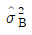
의 추정치는 약 얼마인가?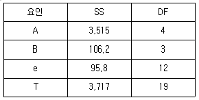
- 5.48
- 6.58
- 7.38
- 8.48
(정답률: 52%)
4. 반복이 없는 2요인 실험에서 요인 A는 5수준, 요인 B는 4수준이고, 오차 제곱합(Se)이 35이면, 오차의 순 제곱합(S′e)은 약 얼마인가?
- 35.60
- 41.40
- 51.90
- 55.42
(정답률: 43%)
5. 모수모형 1요인 실험레서 데이터의 구조식을 표현한 내용으로 맞는 것은?
- 전체모평균 + 오차
- 전체모평균 + 주효과
- 전체모평균 + 주효과 + 오차
- 전체모평균 + 주효과 + 분산
(정답률: 57%)
6. 반복 없는 2요인 실험을 진행하던 중 AiBj수준조합에서 결측치가 발생했을 때의 설명으로 틀린 것은? (단, 요인 A, B는 모수요인이며, 각각의 수준수는 ℓ, m이다.)
- Yates의 방법으로 결측치를 추정해도 총 자유도는 변하지 않는다.
- 결측치의 추정값으로는 오차 제곱함 Se를 최소로 하는 값을 사용하는 것이 바람직하다.
- 반복 없는 2요인 실험에서 Yates에 의해 제안될 격측지(y)의 추정식은
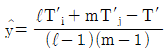
이다. - 반복 없는 2요인 실험에서 결측치가 3개 이상 발생하면 Yates의 방법보다 다시 실험하여 분석하는 것이 더 바람직하다.
(정답률: 49%)
7. 2수준계 직교배열표의 특징으로 틀린 것은?
- 각 열의 자유도는 2이다.
- 2요인 교호작용도 배치할 수 있다.
- 실험횟수를 확대시키지 않고도 많은 요인을 배치할 수 있다.
- 기계적인 조작으로 이론을 잘 모르고도 일부실시법, 분할법, 교락법 등의 배치를 쉽게 할 수 있다.
(정답률: 58%)
8. 부적합품 여부의 동일성에 관한 실험에서 적합품이면 0, 부적합품이면 1의 값을 주기로 하고 4대의 프레스 기계가공을 행하여 200개씩의 제품을 만들어 실험한 결과가 다음과 같을 때, 기계간의 제곱합 SA는 약 얼마인가?
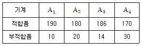
- 1.135
- 2.135
- 3.135
- 4.135
(정답률: 54%)
9. 반복이 있는 2요인 모수모형 실험에서 A, B요인의 수준수는 각각 ℓ=4, m=3이며, 반복(r)는 3이다. 만약 교호작용이 오차항에 풀링된다면 오차항의 자유도는?
- 12
- 24
- 30
- 36
(정답률: 55%)
10. 변량요인에 대한 설명으로 틀린 것은?
- E(ai)=ai, Var(a1)=0이다.
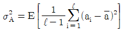
이다.- 수준이 기술적 의미를 갖지 못한다.
- ai등의 합은 일반적으로 0이 아니다.
(정답률: 48%)
11. 라틴방격법의 3요인 A, B, C실험에서 데이터 구조식은?
- xijk=μ+ai+bj+ck
- xijk=μ+ai+bj+ck+eijk
- xijk=μ+ai+bj+ck+eij+ejk+eik
- xijk=μ+ai+bj+ck+eij+ejk+eik+eijk
(정답률: 54%)
12. 상관계수에 대한 설명으로 가장 거리가 먼 것은?
- 상관계수는 -1에서 +1 사이에 존재한다.
- 상관계수는 x와 y 사이의 연관성을 표시하는 척도이다.
- 상관계수는 x와 y 사이의 직선관계를 나타낸느 척도이다.
- 상관계수의 +1 또는 -1에 가까울수록 x와 y 사이에는 상관계수가 작다고 할 수 있다.
(정답률: 59%)
13. 난괴법 실험계획에 대한 설명으로 맞는 것은?
- 교호작용 효과를 구할 수 있다.
- 변량인자의 산포의 추정은 전혀 의미가 없다.
- 변량인자의 모평균 추정은 전혀 의미가 없다.
- 1요인 반복실험을 완전 랜덤으로 실험하는 방법이다.
(정답률: 57%)
14. 반복이 같지 않은 1요인 실험에 대한 설명으로 틀린 것은?
- 실험 중 결측치가 발생할 때 사용한다.
- 실험 결과에 대한 측정에 실패한 경우에 사용한다.
- 결측치가 발생한 경우 결측치를 추정하여 사용한다.
- 기존장치와 새로운 장치위 비교사 대조가 되는 조건의 반복수를 증가시킬 때 사용한다,
(정답률: 49%)
15. 수준의 선택이 랜덤으로 이루어지고, 각 수준이 기술적인 의미를 가지고 있지 못하며 데이터에 계통적 또는 층별에 의한 영향을 검토하는 모형은?
- 모수모형
- 혼합모형
- 특별모형
- 변량모형
(정답률: 58%)
16. 주향거리를 비교하기 위하여 3종류의 경승용차를 같은 조건에서 실험한 데이터와 분산 분석표가 다음과 같을 때, μ(A2)를 유의수준 0.⑤로 구간추정하면 약 얼마인가? (단, t0.95(2)=2.920, t0.975(2)=4.303, t0.95(8)=1.860, t0.975=2.306이다.)
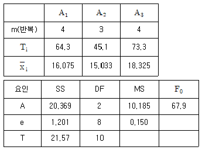
- 14.617 ≤ μ(A2) ≤ 15.449
- 14.517 ≤ μ(A2) ≤ 15.549
- 14.380 ≤ μ(A2) ≤ 15.686
- 14.071 ≤ μ(A2) ≤ 15.995
(정답률: 56%)
17. 모수요인은 갖는 1요인 실험에서 수준 1에서는 6번, 수준 2에서는 5번, 수준 3에서는 4번의 반복을 통해 특성치를 수집한 경우
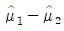
의 95% 신뢰구간의 식으로 맞는 것은?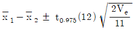
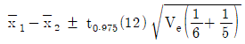
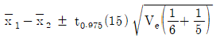
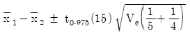
(정답률: 46%)
18. 반복이 없는 2요인 실험에 대한 설명으로 틀린 것은?
- 데이터 구조식 xijk=μ+ai+bj+(ab)ij+eijK이다.
- 일반적으로 두 요인간의 교호작용은 나타내지 않는다.
- 요인이 2개이며, 각 처리조합 내의 측정치가 1개인 경우 말한다.
- 1요인 모수요인이고, 다른 요인이 변량요인인 경우를 난괴법이라고 한다.
(정답률: 42%)
19. 3×3라틴방격법에 의하여 실험을 행하고 분산분석을 실시한 결과, 요인 A는 유의하지 않고, B, C만 유의한다면 μ(BjCi)의 신뢰구간을 구하기 위한 유호반복수(ne)는?
- 2/3
- 9/7
- 9/5
- 9/2
(정답률: 54%)
20. 강력 접착제의 응집력을 높아가 위해서 4요인 A, B, C, D가 중요한 작용을 한다는 것을 알고 각 각 2수준씩 선택하여 Ls(27)직교 배열표를 이용한 실험의 결과가 다음과 같을 때, 총 제곱합(ST)은? (단, 제곱합
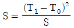
이다.)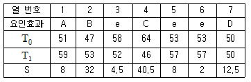
- 14.5
- 107.5
- 127.5
- 1,620
(정답률: 46%)
2과목: 통계적품질관리
21. A공장의 권취공정의 평균사절수는 100m2당 10회로 알려져 있다. 공정을 개선하여 운전해 보니 평균사절수가 5회로 나타났다. 공정부적합수가 적어졌는지 유의수준 5%로 검정한 결과로 맞는 것은?
- 검정통예량은 약 -1.762이다.
- 검정을 할 수 있는 조건이 아니다.
- 유의수준 5%로 공정 부적합수가 적어졌다고 할 수 없다.
- 유의수준 5%로 공정 부적합수가 적어졌다고 할 수 있다.
(정답률: 40%)
22. 상관계수에 관한 설명으로 틀린 것은?
- 상관계수의 제곱을 결정계수라 한다.
- 부 변수 간에 관계가 적을수록 상관계수는 0에 가까워진다.
- 상관계수의 값이 1에 가까울수록 일정한 경향선으로부터의 산포는 커진다.
- 상관계수의 값이 -1에 가까울수록 일정한 경향선으로부터의 산포는 작아진다.
(정답률: 39%)
23. 통계량 S/σ2는 어떤 분포를 따르는가?
- t분포
- χ2분포
- F분포
- 정규분포
(정답률: 54%)
24. 합리적인 군으로 나눌 수 없는 경우, k=25, ∑x=154.6, ∑Rm=8.4일 때 X관리도의 관리상한(UCL)은 약 얼마인가? (단, n=2일 때 d2=1.128이다.)
- 5.253
- 5.293
- 7.075
- 7.115
(정답률: 29%)
25. 다음 자료로부터 두 제품 A, B에 대한 변동계수를 각각 구하면 약 얼마인가?
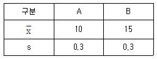
- A는 2%, B는 3%이다.
- A는 3%, B는 2%이다.
- A는 33%, B는 50%이다.
- A는 50%, B는 33%이다.
(정답률: 55%)
26. 정규분포에 대한 설명으로 틀린 것은?
- 분표가 이산적이다.
- 평균치를 중심으로 좌우대칭이다.
- 곡선의 모양은 산포의 정도 σ에 의해 결정된다.
- 확률변수 X를 X-μ/σ로 변환하면 표준정규분포가 된다.
(정답률: 56%)
27.
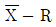
관리도에서 2개의 층 A, B간 평균치의 유의차를 검정하는 다음 의식을 적용하기 위한 전체조건으로 틀린 것은?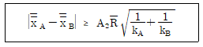
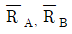
에 차이가 없을 것- 두 관리도가 모두 관리상태일 것
- 두 관리도의 군의 수가 동일할 것
- 두 관리도가 표본의 크기가 도일할 것
(정답률: 43%)
28. 전수검사와 샘플링검사에 대한 설명으로 틀린 것은?
- 이론적으로 전수검사에서는 샘플링 오차가 발생하지 않는다.
- 자동화의 발달로 중량, 형상 등은 전수검사가 많이 활용한다.
- 인장강도시험과 같은 파괴검사의 경우 전수검사는 실시가 곤란하다.
- 시료를 랜덤하게 추출한 경우에는 샘플링 검사의 결과와 전수검사의 결과가 일치하게 된다.
(정답률: 53%)
29.  관리도의 특징으로 맞는 것은?
관리도의 특징으로 맞는 것은?
- 주로 부적합품률을 나타낸 관리도이다.
- 계수형 관리도(
 관리도)와 계수형 관리도(R관리도)를 혼합한 관리도이다.
관리도)와 계수형 관리도(R관리도)를 혼합한 관리도이다. - 평균을 위한
 관리도와 산포를 위한 R관리도를 함께 작성하는 관리도이다.
관리도와 산포를 위한 R관리도를 함께 작성하는 관리도이다. - 관리상태에 대한 해석은
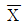
관리도와 R관리도를 운용하는 것에 비해서는 비효율적이다.
(정답률: 54%)
30. 시료부적합품률(p)을 활용하여 모부적합품률(P)의 양측 신뢰구간을 추정하려 할 때, 신뢰구간의 하한값을 구하는 계산식은? (단, n은 충분히 크고, 정규분포를 따른다.)
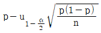
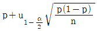
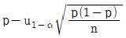
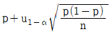
(정답률: 54%)
31. 계수 및 계량 규준형 1회 샘플링 검사(KS Q 0001:2013)의 계량 규준형 1화 샘플링 방식(표준편차 기지)에서 로트의 평균치를 보증할 때 특성치가 높은 편이 좋은 경우의 하한 합격 판정치(을 구하는 식으로 맞는 것은?
- G0σ
- m0-G0σ
- m1σ
- m0+G0σ
(정답률: 51%)
32. c관리도의 관리한계에 대한 설명으로 틀린 것은?
- 보통 3σ관리한계를 사용한다.
- c관리도의 관리한계는
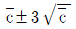
이다. - c관리한게선을 벗어나는 점이 있을 경우 이상상태로 판단한다.
- 시료의 크기가 일정하지 않은 경우에도 관리한계선은 직선이 된다.
(정답률: 50%)
33. 로트의 크기 N=1000인 로트로부터 크기 10개의 시료를 랜덤하게 샘플링하여 이 중에 부적합품 수가 0개이면 합격시키고, 1개 이상 나오면 불합격으로 한다면 이 로트가 합격될 확률은 약 얼마인가? (단, 로트의 부적합품률은 10%이고, 푸아송근사로 계산한다.)
- 20%
- 25%
- 30%
- 37%
(정답률: 29%)
34. np관리도에서 시료군마다 n-120이고, 시료군의 수가 k=25이며, ∑np=90일 때 LCL, UCL은 얼마인가?
- LCL=2.006, UCL=9.206
- LCL=2.226, UCL=9.406
- LCL=고려하지 않음, UCL=9.206
- LCL=고려하지 않음, UCL=9.406
(정답률: 42%)
35. 700개의 부품을 검사하였더니 670개는 적합품이고, 30개는 부적합품이다. 부적랍품 중 20개는 각각 1개의 부적합을 가지고 있고, 나머지 10개는 각각 2개의 부적합을 가지고 있다. 이 로트의 100아이템당 부적합수는 약 얼마인가?
- 0.043
- 0.⑤7
- 4.286
- 5.714
(정답률: 25%)
36. 푸아송 분포의 설명으로 틀린 것은? (단, m은 평균을 의미한다.)
- 평균과 분산은 같다.
- 확률분포는
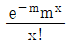
이다. - m≥5이면 정규분포에 근사한다.
- 성공의 평균은 시간에 따라 변한다.
(정답률: 43%)
37. 이항분포에 바탕을 둔 관리도로만 구성 된 것은?
- p관리도, u관리도
- p관리도, np관리도
- u관리도, c관리도
- X관리도, R관리도
(정답률: 50%)
38. 모집단을 몇 개의 층으로 나누어서 각 층으로부터 각각 랜덤으로 표본을 추출하는 층별 샘플링방법이 아닌 것은?
- 층별 비례 샘플링
- 데밍(Deming)샘플링
- 네이만(Neyman)샘플링
- 지그재그(zigzag)샘플링
(정답률: 46%)
39. 가설검정에서 제1종 오류에 대한 설명으로 맞는 것은?
- H0가 진실일 때 H0를 기각하는 오류
- H0가 진실일 때 H0를 채택하는 오류
- H1이 진실일 때 H0을 채택하는 오류
- H1이 진실일 때 H1을 기각하는 오류
(정답률: 47%)
40. 모표준편차가 4인 정규모집단에 대해 H0:μ≤90, H1:μ＞90으로 하여 평균치의 검정을 하려고 n=20으로 하여 시료평균을 구하였더니 92.4였다. 검정결과로 맞는 것은? (단, 위험률 α=0.⑤이고, u0.95=1.645이다.)
- H0가 기각된다.
- 차이가 없다.
- H0가 채택된다.
- 유의하지 않다.
(정답률: 44%)
3과목: 생산시스템
41. 현재 관리중인 조립라인은 목표생산량이 300개/일, 총가동시간이 400분/일, 라인의 여유율이 10%일 때, 사이클 타임은 약 몇 분인가?
- 0.9분
- 1.2분
- 1.5분
- 1.8분
(정답률: 50%)
42. 제품별 배치에서 라인에 배치된 박업자나 작업대의 배당시간을 균등화 하고, 목표로하는 생산율을 맞출 수 있도록 적정한 작업대의 수를 설정하여 작업을 배정하는 것은?
- 공정계획
- 라인밸런싱
- 공수계획
- 여력통제
(정답률: 58%)
43. 최소작업시간(SPT) 우선순위규칙에 의해 작업 A, B, C, D를 수행하고자 할 때 평균완료시간은?
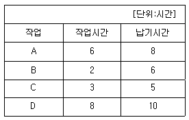
- 6.25
- 7.25
- 8.25
- 9.25
(정답률: 26%)
44. 선반 2대로 구성된 작업장에서 한 달 조업일은 25일, 1일 근무시간은 8시간일 때, 2대의 선반이 각각 1일 평균 90%로 가동되었다면, 이 작업장의 월 기계능력은?
- 188시간
- 222시간
- 360시간
- 444시간
(정답률: 55%)
45. 설비배치의 목적이 아닌 것은?
- 재공품의 안전재고 최적화
- 운반 및 물자취급의 최소화
- 설비 및 인력의 이용률 증대
- 공정의 균형화의 생산흐름의 원활화
(정답률: 35%)
46. 내주제작, 외주제작의 판단기준에서 일반적으로 외주제작을 해야 할 경우가 아닌 것은?
- 기밀보장이 필요한 것
- 주문처에서 외주를 지정하는 것
- 외주기업에서 특허권을 가지고 있는 것
- 사내에 필요한 기술이나 설비가 아닌 것
(정답률: 59%)
47. 독립수요품보다 종족수요품의 재고관리에 MRP시스템을 적용했을 때 기대되는 장점이 아닌 것은?
- 부품 및 자재부족현상의 최소화
- 생산일정 및 자재계획의 변경 감소
- 작업의 원활화 및 생산소요시간의 단축
- 공정품을 포함한 종속수요품의 편균재고 감소
(정답률: 30%)
48. 다음의 단순이동평균법에 대한 설명 중 괄호 A, B에 들어갈 내용으로 맞는 것은?
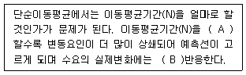
- A: 짧게, B: 빨리
- A: 짧게, B: 늦게
- A: 길게, B: 빨리
- A: 길게, B: 늦게
(정답률: 40%)
49. 경제적 주문량(EOQ)모형의 가정이 아닌 것은?
- 재고부족을 허용한다.
- 단일품목만을 고려한다.
- 조달기간은 일정하다고 알려져 있다.
- 1회 주문비용은 주문량에 관계없이 일정하다.
(정답률: 48%)
50. 다음 내용을 기초로 구할 수 있는 설비의 실질가공률은?
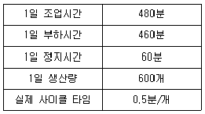
- 75%
- 80%
- 85%
- 90%
(정답률: 35%)
51. 테일러(F. W. Taylor)시스템에 대한 특징으로 가장 거리가 먼 것은?
- 과업관리
- 차별적 성과급제
- 동시관리
- 성공에 대한 우대
(정답률: 47%)
52. PERT기법에서 활동의 평균소요시간을 추정하는 데 사용하는 시간치가 아닌 것은?
- 최빈시간치
- 비관시간치
- 낙관시간치
- 우연시간치
(정답률: 53%)
53. 고장이 발생하기 전에 정기적인 점검검사와 조기수리를 행하는 설비보전방식은?
- CM(개량보전)
- PM(예방보전)
- MP(보전예방)
- BM(사후보전)
(정답률: 62%)
54. WF(Work factor)와 MTM(Method time measurement)의 공통점에 속하는 것은?
- 시간단위가 같다.
- 작업속도가 같다.
- 기본속도가 같다.
- 수행도 평가가 필요 없다.
(정답률: 47%)
55. 동작경제의 원칙 중 신체 사용에 관한 원칙에 해당하는 것은?
- 조명설치는 작업에 적당한 조도를 보장할 수 있는 것이어야 한다.
- 공구류는 될 수 있는 대로 사용하는 위치 가까이에 배치하여야 한다.
- 올바른 자세를 취할 수 있는 모양과 높이를 가진 의자를 공급해야 한다.
- 가능하다면 쉽고도 자연스러운 리듬이 작업동작에 생기도록 작업을 배치한다.
(정답률: 42%)
56. 작업분석 시 작업조건에 대한 개선사항으로 고려해야 될 사항 중 틀린 것은?
- 해로운 먼지ㆍ가스ㆍ연기 등을 가능한 천천히 제거한다.
- 안전사고에 대비한 체계화된 구급 프로그램을 세운다.
- 귀마개를 착용하거나 소음을 적게 하는 공정개선을 실시한다.
- 햇빛이 현장에 들수록 있도록 천정이나 창문등을 개선하고 환기를 적절하게 시킨다.
(정답률: 63%)
57. 5개의 활동 AㆍBㆍCㆍDㆍE로 구성된 프로젝트의 조건이 다음과 같을 때, AOA(Activity On Arrow)네트워크로 최소한의 가상활동을 이용하여 표현하고자 하는 경우 필요한 가상활동(Dummy Activity)의 최소 개수는?
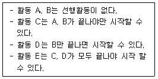
- 0개
- 1개
- 2개
- 3개
(정답률: 52%)
58. 부품이나 자재가 제조공정에 투입되는 과정을 비롯하여 이들의 작업 및 검사의 순서를 나타내는 도표는?
- 유입유출표(form to chart)
- 흐름공정도표(flow process chart)
- 작업공정도표(operation process chart)
- 다품종공정도표(multi-product process chart)
(정답률: 52%)
59. 적시생산시스템(JIT)의특징이 아닌 것은?
- 푸시 방식(push system)의 자재흐름을 가진다.
- 흐름 생산시스템에 적합한 생산관리 방식이다.
- 작업전환이 용이하고 다기능 작업자가 필요하다.
- 공급업자와의 관계가 적재적 관계가 아닌 우호적 관계로 생각한가.
(정답률: 59%)
60. 여유시간이 4분, 정미시간이 40분일 경우 외경법에 의한 여유율은?
- 7%
- 9%
- 10%
- 12%
(정답률: 51%)
4과목: 품질경영
61. 품질경영시스템-요구사항(KS Q ISO9001:2015)에 명시된 품질경영원칙이 아닌 것은?
- 표준화
- 고객중시
- 리더십
- 프로세스 접근법
(정답률: 41%)
62. 측정시스템의 정밀도 분석의 게이지 R&R 테스트에서 “R&R"이 의미하는 것은?
- 반복성과 재현성
- 반복성과 안전성
- 재현성과 안전성
- 재현성과 직진성
(정답률: 54%)
63. 일반적으로 과학기술계 표준은 크게 3가지로 구분할 수 있다. 3가지 구분에 포함되지 않는 것은?
- 측정표준
- 참조표준
- 성문표준
- 작업표준
(정답률: 32%)
64. 표준의 서식과 작성방법(KS A 0001:2015)의 표준의 종류에서 “어떤 표준을 적용하는데 있어서 참조하는 편이 좋은 표준(국제표준, 국가표준, 단체표준등) 및 기타문서”를 의미하는 표준을 무엇이라고 하는가?
- 인용표준
- 제품표준
- 시험표준
- 관련표준
(정답률: 47%)
65. 품질개선과 고객만족에 필수조건인 고객의 욕구를 파악하는 방법으로 볼 수 없는 것은?
- 직접면담법
- 시뮬레이션
- 직접관찰법
- 제품책임방법
(정답률: 50%)
66. 생산단계에서 설계품질에 적합하도록 제조품질을 확보하기 위한 품질관리 활동에 해당되지 않는 것은?
- 공정관리
- 검사
- 공정개선
- 표준화
(정답률: 45%)
67. 제품과 서비스의 차이에 대해 새서(Sasser)가 설명한 4가지 서비스 차원에 해당하지 않은 것은?
- 소멸성(perishability)
- 불균일성(heterogeneity)
- 형상성(configurationally)
- 동시성/비분리성(simultaneity/inseparability)
(정답률: 46%)
68. 사내표준화의 요건으로 틀린 것은?
- 기술 및 관리의 진조와 연동되어 적시에 신속히 개정ㆍ보급될 것
- 엄수하여야 할 최적조건 및 방법을 관리자 중심에서 최적점을 추구하여 표준화할 것
- 조직원이 자율적으로 효과적 방법을 찾아 개선점을 찾을 수 있는 환경을 조성할 것
- 규격은 반드시 최신본(관리본)으로만 적용될 수 있도록 규격의 제ㆍ개정 및 폐지 시 배포처와의 관계를 분면히 하여 명확히 처리되도록 할 것
(정답률: 55%)
69. 문제 항목 중 대응이 되고 요소를 찾아내어 이것을 행과 열로 배치하고, 그 교점에 각 요소 간의 관련 유무나 정도를 표시하고, 이 교점을 착상의 포인트로 하여 문제점을 명확히 해나가는 신 QC기법은?
- 연관도법
- 계통도법
- 매트릭스도법
- 애로우다이어그램법
(정답률: 51%)
70. 제품의 품질보증에 관한 설명으로 가장 거리가 먼 것은?
- 고객의 필요에 적합하고 충족시키는 것이 품질보증의 충분조건이다.
- 제조물 책임법이 시행된다고 모든 제품의 품질이 향상되었다고 할 수는 없다.
- 고객의 전폭적인 신뢰를받는 조건은 품질에 적합하게 가격이 형성됨에 있다.
- 제품엔 결함이 없어야 하고, 만약 제품에 결함이 있으면 제조회사가 보상해야 한다.
(정답률: 47%)
71. 제조물 책임법에서 정의하고 있는 결함의 종류가 아닌 것은?
- 제조상의 결함
- 성계상의 결함
- 표시상의 결함
- 기능상의 결함
(정답률: 36%)
72. 1962년 마틴항공사에서 자사제품의 미사일의 신뢰성을 높이기 위한 활동으로 시작되었으며, 부주의를 없애는 데 중점을 둔 것으로 무결점운동이라고 불리는 것은?
- ZD
- 6시그마
- 3정 5S
- 싱글 ppm
(정답률: 43%)
73. 기업의 6시그마 개선 프로젝트에 대한 실무 책임자로서 혁신활동에 전념하는 수진요원은?
- 블랙벨트(BB)
- 그림벨트(GB)
- 챔피언(Champion)
- 마스터 블랙벨트(MBB)
(정답률: 55%)
74. 품질비용에 관한 쥬란(Juran)의 1:10:100의 법칙을 적용할 때, 생산단계에서 바로 잡는데 100원이 소요되는 것을 방치하면 고객에게 전달된 후 얼마의 손실이 발생 할 것으로 예측되는가?
- 10원
- 100원
- 1000원
- 10000원
(정답률: 42%)
75. 산업표준화법에 따른 산업표준화의대상이 아닌 것은?
- 광공업품의 종류, 형상, 치수
- 광공업품의 생산업무, 사무규정
- 광공업품의 설계방법, 제도방법
- 광공업품의 시험, 분석, 측정방법
(정답률: 56%)
76. 공정능력의 전제조건 및 특징에 관한 설명으로 틀린 것은?
- 공정능력은 장래 예측할 수 있는 결과에 대한 것이다.
- 공정능력은 현재 및 과거에 대한 결과를 평가하는 것이다.
- 공정능력은 특정조건 하에서의 도달 가능한 한게상태를 표시하는 정보여야 한다.
- 공정능력의 척도는 공정능력의 개념과 결부시켜 결정하게 되며 척도는 반드시 고정된 것이 아니다.
(정답률: 37%)
77. 국제표준화기구(ISO)에서 사용되는 공식 언어가 아닌 것은?
- 영어
- 독일어
- 불어
- 러시아어
(정답률: 51%)
78. 허쯔버그의 두 요인이론 중 동기(만족)요인에 해당하지 않는 것은?
- 인정
- 성취감
- 작업조건
- 능력 및 지식의 개발
(정답률: 46%)
79. 어느 기계부품을 랜덤하게 취하여 도수표에 정리한 결과, x0=72.5, h=0.2, ∑fi=150, ∑fiui=77, ∑fiu2i=765를 얻었다. 기게부품의 평균값은 약 얼마인가?
- 71.520
- 71.7⑤
- 72.603
- 72.7⑤
(정답률: 40%)
80. 부품의 끼워맞춤에 관한 3가지 기본 형태에 속하지 않은 것은?
- 억지 끼워맞춤
- 겹침 끼워맞춤
- 중간 끼워맞춤
- 헐거운 끼워맞춤
(정답률: 54%)
이유는 모수모형 1요인 실험에서 오차항 eij는 처리 효과와 상호작용 효과를 제외한 나머지 요인들의 영향을 모두 포함하고 있기 때문에, 이들 요인들이 고정되어 있다면 eij도 고정된 값으로 정의될 수 있다. 따라서 eij는 특성치에서 고정된 값으로 정의된다.